Paneer Butter Masala Recipe
List Of Ingredients
- 200 grams paneer
- 3 onions
- 3 tomatoes
- 10 Cashew nuts
- 1 inch ginger
- 4 - 5 pods garlic
- 1/2 tablespoon coriander powder
- 1 tablespoon kashmiri chili powder
- 1/4 teaspoon garam masala
- 1 bay leaf
- 3 cloves
- 3 cardamom
- 1 inch cinnamon
- 1 teaspoon kasuri methi leaves
- 2 - 3 sprigs coriander leaves
- To taste salt
- 2 tablespoons butter
- 1 1/2 tablespoons fresh cream
Preparation
- Finely chop the onions and tomatoes. Soak the cashew nuts in water.
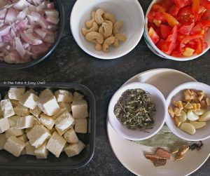
- Heat some oil in a pan, and add the chopped onions.
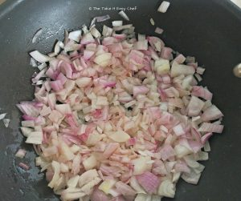
- Cook till they are tender. As soon as the onions turn translucent, add the chopped tomatoes.
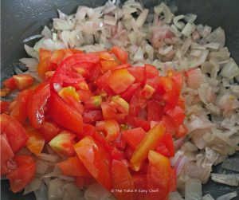
- Add salt, and mix well.
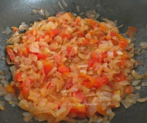
- Close the lid, and cook for 3 minutes on a low flame.
- Open the lid, and add coriander powder, chili powder, garam masala, and cashew nuts.
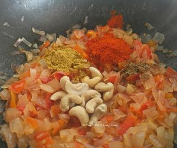
- Stir well, cook till the juices start to disappear, and switch off.
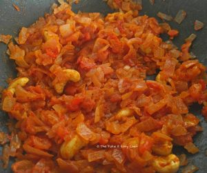
- Let it cool. Transfer the onion and tomato mixture to a blender, add a cup of water, and grind to a fine paste.
- his is the "masala" of our paneer butter masala. Add more water if the masala it's too thick.
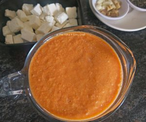
- Heat a pan, and melt the butter.
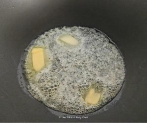
- Fry the dry spices, bay leaf, cardamom, cloves and cinnamon, for 1 minute on a low flame.
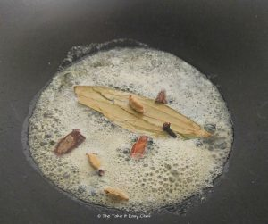
- Crush the ginger and garlic, and add to the pan
- Add the masala to the pan, add more chili powder (if required) for the colour, and mix well
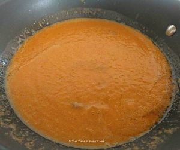
- Cook with the lid closed for 3 minutes.
- Open the lid, and cook for some more time if you want to reduce the gravy. Add the paneer cubes and the Kasuri methi leaves.
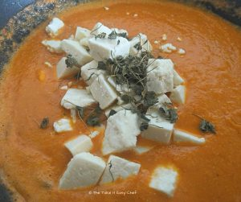
- Add some cream and mix well.
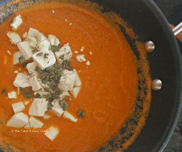
- Garnish with coriander leaves and a pinch of methi leaves. Serve hot with roti or naan.
| Prep Time |
Cooking Time |
Total Time |
Servings |
Author |
| 15 minutes |
30 minutes |
40 minutes |
3 |
Swasthi |